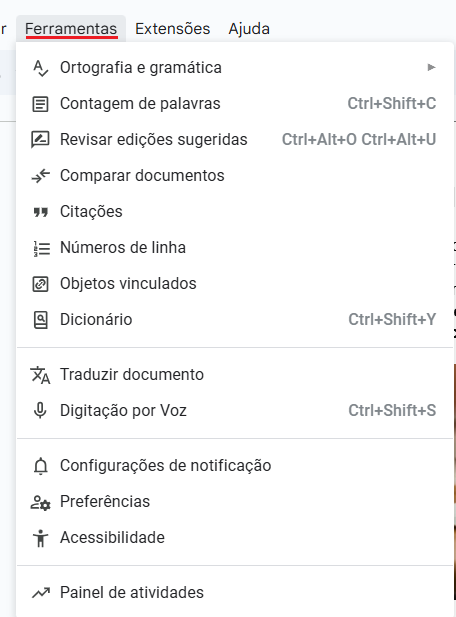

Ferramenta de Edição de Texto: Google Docs
O Google Docs é um processador de texto online gratuito que permite criar, editar e colaborar em documentos em tempo real.
É parte integrante do Google Workspace.
Principais Características:
- Acessibilidade: Edite de qualquer lugar, a qualquer momento.
- Colaboração em Tempo Real: Trabalhe com outras pessoas simultaneamente.
- Salvamento Automático: Ao passo que o trabalho é realizado, ele é salvo na nuvem.
- Histórico de Versões: Revise e restaure versões anteriores.
- Integração: Conecta-se com outros serviços Google.
Formatação de Textos: Estilos, Fontes, Tamanhos, Alinhamento e Espaçamento
A formatação adequada é crucial para a legibilidade e organização do seu documento.
Veja a seguir várias ferramentas para controlar a aparência do seu texto.
Estilos de Parágrafo:
Os estilos de parágrafo permitem aplicar um conjunto predefinido de formatações (fonte, tamanho, cor, espaçamento) a títulos, subtítulos e texto normal, garantindo consistência em todo o documento e facilitando a criação de um sumário automático.
- Selecione o texto que deseja formatar.
- Na barra de ferramentas, clique no menu suspenso "Estilos" (geralmente exibe "Texto normal" por padrão).
- Escolha o estilo desejado (ex: Título 1, Título 2, Texto normal).
Fontes, Tamanhos e Atributos de Texto:
Personalize a aparência do seu texto com diversas opções de fonte, tamanho e atributos como negrito, itálico e sublinhado.
- Selecione o texto que deseja alterar.
- Na barra de ferramentas, utilize os menus:
- Fonte: Escolha entre centenas de fontes disponíveis.
- Tamanho da Fonte: Ajuste o tamanho do texto.
- Negrito (B), Itálico (I), Sublinhado (U): Aplique esses atributos para destacar o texto.
- Cor do Texto (A com barra colorida): Mude a cor da fonte.
- Cor de Destaque (Marcador): Adicione um realce ao texto.
Alinhamento de Texto:
O alinhamento de texto define como o conteúdo se posiciona em relação às margens, impactando diretamente a legibilidade
e a estética do seu documento.
Opções de Alinhamento:
- Alinhar à Esquerda: O texto se alinha à margem esquerda, deixando a direita irregular. Padrão para a maioria dos textos.
- Centralizar: O texto fica no centro da página. Ideal para títulos e cabeçalhos.
- Alinhar à Direita: O texto se alinha à margem direita. Usado para datas ou assinaturas.
- Justificar: O texto se estende por toda a largura entre as margens, criando bordas retas. Ideal para blocos de texto longos, como artigos.
Espaçamento de Linha e Parágrafo:
O espaçamento controla a distância entre as linhas e os parágrafos, impactando diretamente a legibilidade.
- Selecione o(s) parágrafo(s) que deseja ajustar.
- Na barra de ferramentas, clique no ícone de "Espaçamento de linha e parágrafo" (geralmente duas setas verticais com linhas).
- Escolha uma opção predefinida (Simples, 1.15, 1.5, Duplo) ou clique em "Espaçamento personalizado..." para ajustes finos.
Marcadores e Numeração
Marcadores e numeração são ferramentas poderosas para estruturar seu conteúdo, tornando listas e sequências de informações mais claras e fáceis de ler.
Inserir Listas de Marcadores:
Use marcadores para listar itens que não precisam de uma ordem específica, como uma lista de compras ou características de um produto.
- Posicione o cursor onde deseja iniciar a lista.
- Vá em **Formatar** no menu superior.
- Selecione **Marcadores e numeração**.
- Escolha **Lista de marcadores**.
- Clique no ícone de marcadores (geralmente uma bolinha) na barra de ferramentas e comece a digitar seus itens.
- Pressione `Enter` para adicionar um novo item e `Enter` novamente em uma linha vazia para finalizar a lista.
Dica: Você pode alterar o estilo do marcador clicando na seta ao lado do ícone de marcadores na barra de ferramentas.
Inserir Listas Numeradas:
Use a numeração para itens que seguem uma sequência, como instruções passo a passo, etapas de um processo ou um ranking.
- Posicione o cursor onde deseja iniciar a lista.
- Vá em **Formatar** no menu superior.
- Selecione **Marcadores e numeração**.
- Escolha **Lista numerada**.
- Clique no ícone de numeração (geralmente 1., 2., 3.) na barra de ferramentas e comece a digitar seus itens.
- Pressione `Enter` para adicionar um novo item e `Enter` novamente em uma linha vazia para finalizar a lista.
Dica: Para criar subníveis (listas aninhadas), use a tecla `Tab` antes de digitar o item e `Shift + Tab` para retornar ao nível anterior.
Estrutura do Documento: Cabeçalhos, Rodapés e Números de Página
Cabeçalhos, rodapés e números de página são elementos essenciais para organizar e identificar documentos, especialmente os mais longos.
Inserir Cabeçalhos e Rodapés:
Cabeçalhos aparecem na parte superior de cada página, e rodapés na parte inferior. São ideais para incluir títulos de seção, nome do autor ou data.
- Vá em Inserir no menu superior.
- Selecione Cabeçalhos e rodapés.
- Escolha Cabeçalho ou Rodapé.
- Uma área editável aparecerá na parte superior ou inferior da página. Digite o texto desejado.
- Para fechar, clique fora da área do cabeçalho/rodapé ou pressione Esc.
Dica: Para ter um cabeçalho/rodapé diferente na primeira página (por exemplo, sem número de página ou com um título específico), clique na área do cabeçalho/rodapé, depois em Opções e marque "Primeira página diferente".
Inserir Números de Página:
Os números de página ajudam na navegação e referência do documento.
- Vá em Inserir no menu superior.
- Selecione Números de página.
- Escolha a posição (ex: superior direito, inferior central) e se deseja iniciar na primeira página ou pular a primeira.
O Google Docs inserirá automaticamente os números de página em todas as páginas (ou a partir da página selecionada).
Estilos de Parágrafos (Revisão e Importância):
Embora já tenhamos abordado, é crucial reforçar que o uso de estilos de parágrafos (Título 1, Título 2, Texto normal, etc.) não só padroniza a aparência, mas também é a base para a criação de um Sumário Automático, que veremos em um próximo slide. Eles definem a hierarquia do seu conteúdo.
- Selecione o texto (ex: um título de seção).
- Na barra de ferramentas, clique no menu de Estilos e escolha o estilo apropriado (ex: Título 1 para um capítulo principal).
Elementos Visuais: Imagens, Tabelas e Gráficos
Enriqueça seus documentos com elementos visuais que ajudam a ilustrar informações e torná-las mais compreensíveis. O Google Docs permite a inserção e manipulação de imagens, tabelas e gráficos.
Inserir Imagens:
Imagens podem ser adicionadas de diversas fontes e são essenciais para complementar o texto.
- Posicione o cursor onde deseja inserir a imagem.
- Vá em Inserir no menu superior.
- Selecione Imagem e escolha a fonte (Fazer upload do computador, Pesquisar na web, Drive, Fotos, Por URL, Câmera).
- Após inserir, clique na imagem para redimensionar (arrastando os cantos) ou movê-la.
- Uma barra de ferramentas flutuante aparecerá abaixo da imagem, permitindo ajustar o ajuste do texto (Em linha, Quebra de texto, Atrás do texto, Na frente do texto) e outras opções de formatação.
Inserir Tabelas:
Tabelas são ideais para organizar dados em linhas e colunas, facilitando a visualização e comparação de informações.
- Posicione o cursor onde deseja inserir a tabela.
- Vá em Inserir no menu superior.
- Selecione Tabela e arraste o mouse sobre a grade para definir o número de linhas e colunas.
- Após inserir, clique dentro da tabela para digitar. Para formatar, clique com o botão direito na tabela ou vá em Formatar > Tabela.
- A barra lateral "Opções de tabela" (que aparece ao clicar com o botão direito e selecionar "Opções de tabela" ou ao selecionar a tabela) permite ajustar propriedades como bordas, cores, dimensões de linha/coluna e alinhamento do texto dentro das células.
Inserir Gráficos:
Gráficos transformam dados complexos em representações visuais fáceis de entender, como barras, linhas ou pizza.
- Posicione o cursor onde deseja inserir o gráfico.
- Vá em Inserir no menu superior.
- Selecione Gráfico e escolha o tipo (Barras, Colunas, Linhas, Pizza). Você pode importar dados do Google Sheets ou criar um novo.
- Após inserir, clique no gráfico e depois em "Abrir origem" (ícone de planilha) para editar os dados no Google Sheets.
- Para formatar o gráfico, clique nele e depois em "Opções de gráfico" (ícone de três pontos verticais ou barra lateral que aparece). A barra lateral permite personalizar cores, títulos, legendas e muito mais.
Automatização: Sumário, Legendas
Para documentos longos e complexos, as ferramentas de automatização do Google Docs são um diferencial, economizando tempo e garantindo precisão.
Sumário Automático:
Um sumário (ou índice) automático é gerado com base nos estilos de título aplicados ao seu documento (Título 1, Título 2, etc.).
- Certifique-se de que seus títulos estão formatados com os estilos de parágrafo corretos (ex: Título 1, Título 2).
- Posicione o cursor onde deseja inserir o sumário (geralmente no início do documento).
- Vá em Inserir no menu superior.
- Selecione Sumário.
- Escolha o estilo de sumário desejado (com ou sem números de página, com links).
Legendas para Imagens, Tabelas e Gráficos:
Adicionar legendas ajuda a contextualizar seus elementos visuais, tornando o documento mais informativo.
- Insira a imagem, tabela ou gráfico no seu documento.
- Posicione o cursor logo abaixo ou acima do elemento.
- Digite a legenda desejada. Embora o Google Docs não tenha uma função de "Inserir Legenda" automática como alguns outros processadores de texto, você pode formatar o texto da legenda para que se destaque e fique associado ao elemento (ex: usar um estilo de texto menor, itálico).
Colaboração e Revisão
O Google Docs possui ferramentas de colaboração que permitem que equipes trabalhem juntas, revisem documentos e gerenciem permissões de acesso.
Compartilhamento de Documentos e Controle de Acesso:
Compartilhar é o primeiro passo para a colaboração. Você pode controlar quem vê e edita seu documento.
- Clique no botão Compartilhar no canto superior direito da tela.
- Na caixa de diálogo, você pode:
- Adicionar pessoas e grupos: Digite e-mails e defina a permissão (Leitor, Comentador, Editor).
- Obter link: Crie um link compartilhável e defina a permissão para qualquer pessoa com o link (Restrito, Qualquer pessoa com o link).
- Clique em Concluído ou Enviar.
Comentários e Sugestões Colaborativas:
Facilite a revisão e o feedback com comentários e o modo de sugestões.
Comentários:
- Selecione o texto sobre o qual deseja comentar.
- Clique no ícone de Adicionar comentário (um balão de fala com um sinal de mais) na barra de ferramentas ou no menu lateral que aparece.
- Digite seu comentário na caixa e clique em Comentar.
- Outros colaboradores podem responder aos comentários ou marcá-los como resolvidos.
Modo de Sugestões:
Em vez de editar diretamente, você pode sugerir alterações que o proprietário do documento pode aceitar ou rejeitar.
- No canto superior direito, ao lado do botão "Compartilhar", clique no menu suspenso que geralmente diz "Edição".
- Selecione Sugestão.
- Qualquer alteração que você fizer agora aparecerá como uma sugestão, destacada em uma cor diferente, com um comentário lateral.
- O proprietário ou outros editores podem clicar na sugestão para Aceitar ou Rejeitar.
Ferramentas de Revisão Essenciais:
Antes de finalizar, use as ferramentas integradas para garantir a qualidade do seu texto.
Verificação Ortográfica e Gramatical:
- Vá em Ferramentas no menu superior.
- Selecione Ortografia e gramática e, em seguida, Verificação ortográfica e gramatical.
- O Docs passará pelo seu documento, destacando possíveis erros e oferecendo sugestões de correção.
Contagem de Palavras:
Útil para requisitos de comprimento de texto.
- Vá em Ferramentas no menu superior.
- Selecione Contagem de palavras.
- Uma pequena janela mostrará o número de palavras, caracteres (sem e com espaços) e páginas do documento. Você pode marcar a opção "Exibir contagem de palavras ao digitar" para vê-la em tempo real.

Menu "Ferramentas" onde se encontram as opções de revisão.